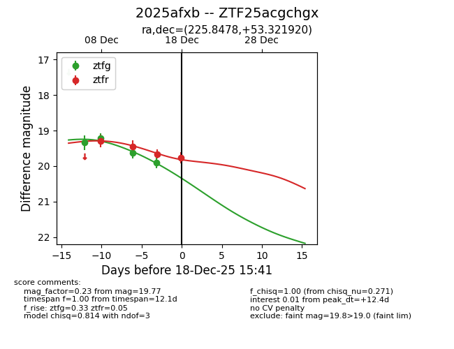
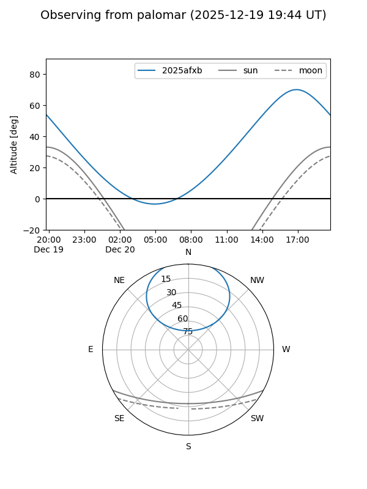

2025afxb
Target 2025afxb at 2025-12-18 11:17
Aliases and brokers:
FINK: fink-portal.org/ZTF25acgchgx
Lasair: lasair-ztf.lsst.ac.uk/objects/ZTF25acgchgx
ALeRCE: alerce.online/object/ZTF25acgchgx
TNS: wis-tns.org/object/2025afxb
YSE: ziggy.ucolick.org/yse/transient_detail/2025afxb
alt names
ZTF25acgchgx (ztf,fink_ztf)
2025afxb (tns,yse)
Coordinates:
equatorial (ra, dec) = 225.8478,+53.32192
equatorial (HMS+DMS) = 15:03:23.47,+53:19:18.91
galactic (l, b) = (89.1051,+54.25280)
Photometry
last ztfg=19.91, ztfr=19.66
4 ztfg, 3 ztfr detections
Lightcurve

Visibility


Additional plots